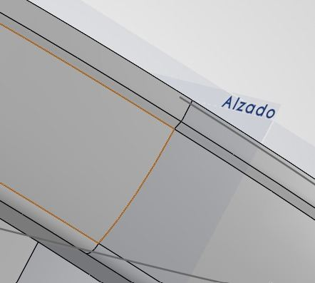
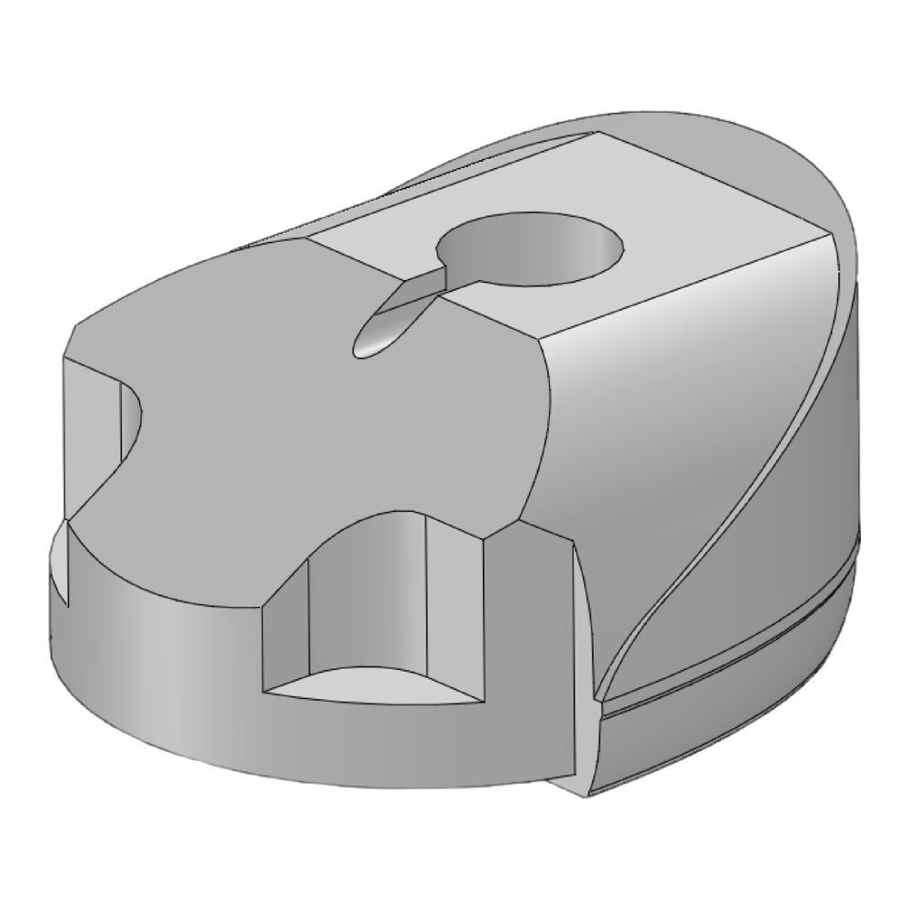

Martín
The water tankStarted the transparent tank as a solid, then realised it was hollow and needed surfaces. The curved connecting section and aligning the base details with the reservoir were his big fight.
“It took me forever to learn the tools from scratch.”